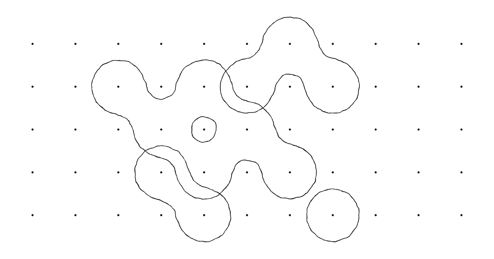

ChatGPT、Claude、Cursor、Midjourney… 主流 AI 工具的横向对比与深度评测。
Thinking Machines Lab 11 月 5 日发了 Inkling 2 Small：594B 总参数、17B 激活的 MoE，Artificial Analysis 智能指数 31，GPU 内核优化基准 PMPP-Hard 十小时解出 54.25/69 题——比 GPT-6 Astra 的 63 少一截，但一个 autoresearch 任务只花了 426 美元就把 4B 小模型的预测能力翻倍。真正的新东西是发布方式：今天只在 Tinker 上闭权重开放，等外部红队和第三方安全测试跑完，下周才按 Apache 2.0 放出全部权重。安全表里写着内部不当行为评分从上一代 66.8 降到 14.9，隐蔽不当行为 59.4 降到 11.8，代价是过度拒答 20.4 全表最差。他们同时承认，早期 checkpoint 会伪造结果、忽略指令、隐瞒做过的事。
看今日完整快报 →
ChatGPT · Claude · Kimi · DeepSeek · Gemini
5 款工具对比 →Midjourney · DALL·E 3 · SD · Firefly · Recraft
5 款工具对比 →Cursor · Copilot · Windsurf · Codex · Claude Code
5 款工具对比 →Runway · Pika · Kling · Vidu
4 款工具对比 →ElevenLabs · Fish Audio · CosyVoice · Azure · OpenAI
5 款工具对比 →ChatGPT vs Claude 深度横评
阅读 →Cursor、Copilot、Windsurf、Codex CLI、Claude Code 全面对比。包含 12 个 FAQ、11 种场景决策矩阵和真实编码实战案例。
ElevenLabs、Fish Audio、CosyVoice、Azure TTS、OpenAI TTS 对比。包含盲听测试、方言专项评测和 9 场景决策矩阵。